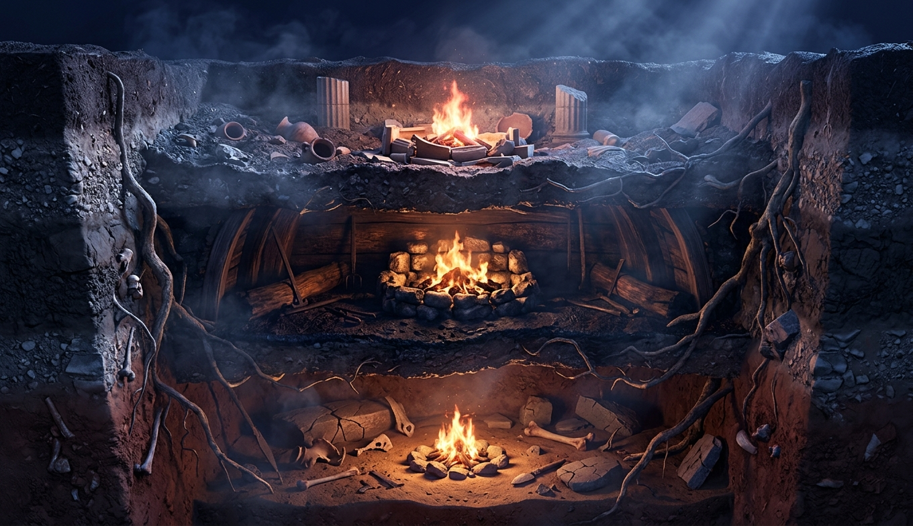
«Прежде всего во вселенной Хаос зародился, а следом широкогрудая Гея». Гесиод, VIII век до нашей эры. Три очага в разрезе земли, один под другим: греческий храм, северный дом, африканская саванна. Чем глубже, тем старше, и на самом дне миф, в котором мир никто не создавал.
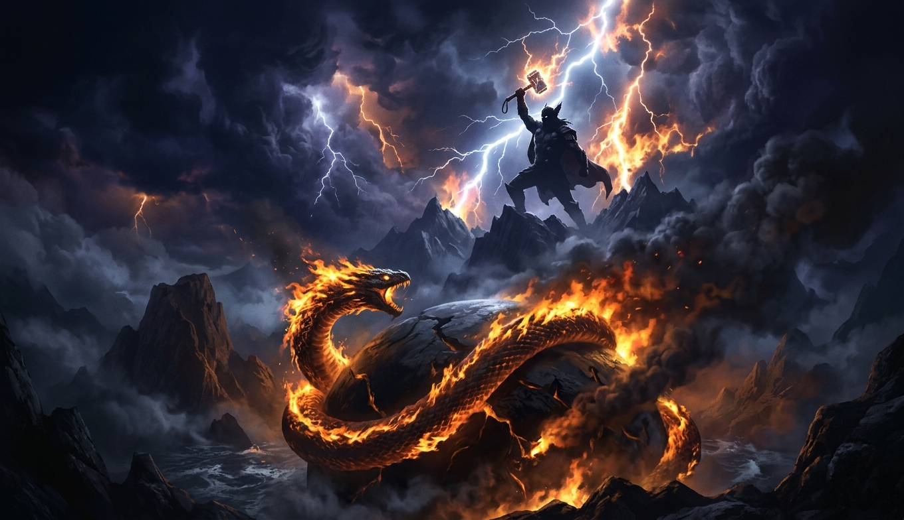
«Отец Зевс», «Юпитер», «Дьяус-питар», «Тюр». Четыре языка, одно слово: «дневное небо-отец». Громовержец с молотом над горящим змеем, обвившим мир. Эту сцену рассказывали от Исландии до Индии, и она старше всех языков, на которых её рассказали.
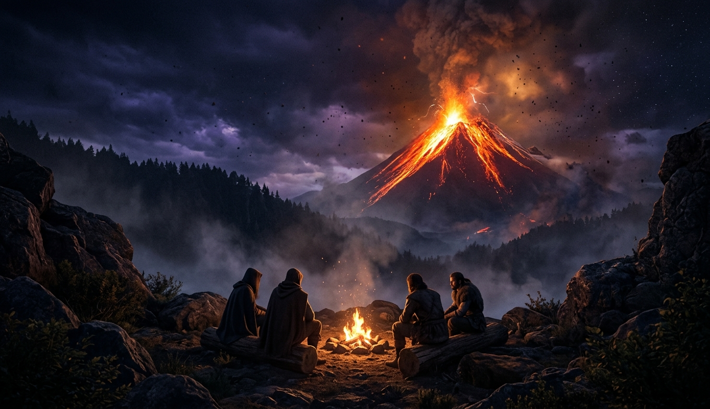
«Три зимы подряд, и ни одного лета между ними». Младшая Эдда о Фимбулвинтере. Люди у костра смотрят на вулкан, и через семь тысяч лет их правнуки всё ещё рассказывают, как гора взорвалась. Миф это архив с плохим сжатием и сроком хранения, о котором письменность может только мечтать.
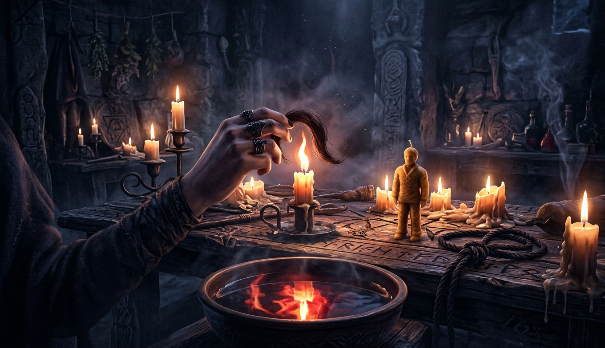
«Никто меня убивает, друзья, не силой, а хитростью!» Полифем, ослеплённый, кричит братьям, и братья уходят: раз Никто, значит, никто. Прядь волос над свечой, восковая кукла, узел на верёвке. У мифа есть логика, и она не хуже нашей. Она с другими аксиомами.
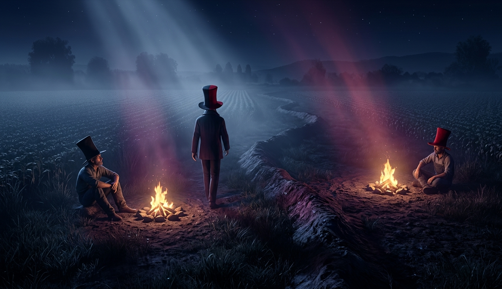
Эшу идёт по меже между полями двух друзей в шляпе, красной с одной стороны и чёрной с другой. Вечером друзья спорят, какого цвета была шляпа, и убивают друг друга. Миф это машина для разрешения противоречий, и у машины есть оператор. Его зовут по-разному, и он везде.
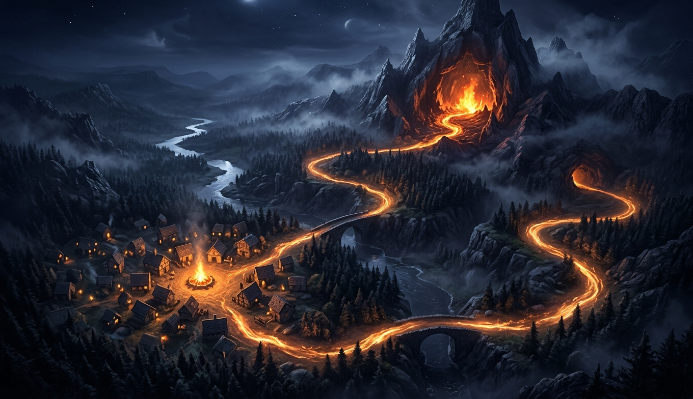
«Отправка. Помощник. Испытание. Возвращение». Дорога от очага в деревне до логова дракона и обратно, замкнутая в петлю. Пропп прочитал сто русских сказок и нашёл одну. Потом её нашли у Персея, Сигурда и Сундиаты, и в Голливуде её теперь выдают в виде конспекта.
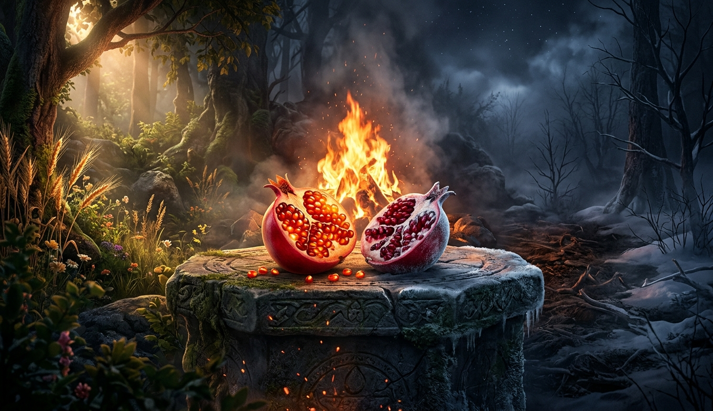
Гранат на алтаре, половина в свете лета, половина во тьме зимы. Персефона съела зёрна и треть года живёт под землёй, и треть года ничего не растёт. Миф врёт про причину и не врёт про следствие. Для того, кто сеет, этого достаточно.
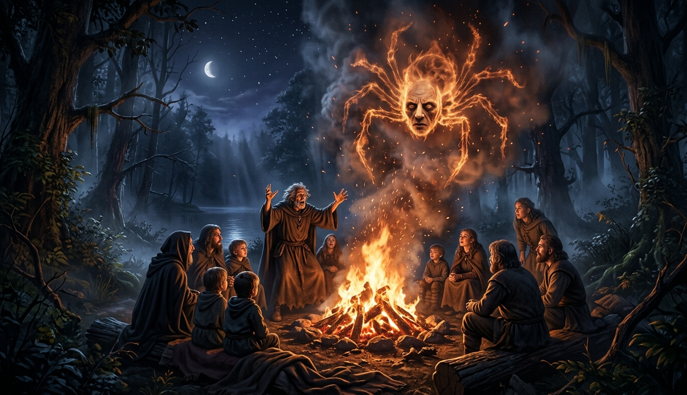
Рассказчик у костра, слушатели наклонились, и в дыму над огнём проступает паук с лицом старика. Человек, но видит будущее. Бог, но одноглазый. Паук, но торгуется с небом. Приживается то, что нарушает ровно одно правило. Ни ноль, ни три.
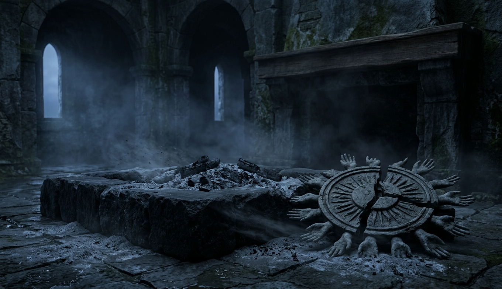
«Великий Пан умер!» Крик с корабля у берегов Пакси при Тиберии, и с берега ответный плач тысяч голосов. Холодный очаг, пепел, разбитый диск солнца с руками-лучами. Боги умирают, и у смерти бога есть логика. Она та же, что у его рождения.
Ночная улица, и люди стоят вокруг светящегося экрана так же, как стояли вокруг костра, лица снизу освещены. Огонь украли ещё раз. Мы не перестали сочинять мифы. Мы перестали их так называть.
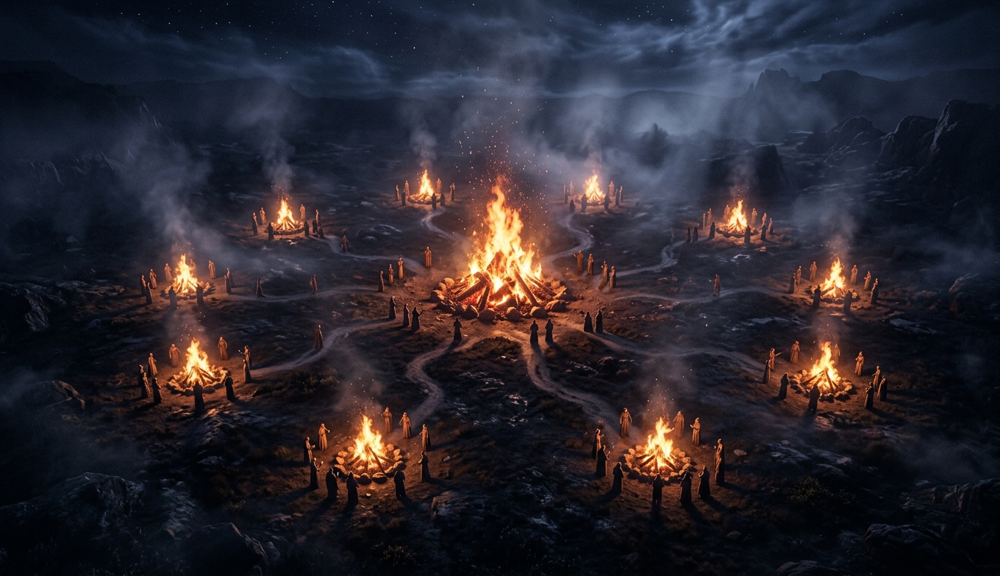
Десять глав, десять костров по кругу, и один в центре, от которого зажигали остальные. Дальше таблица и честная граница: где кончается сравнительная мифология и начинаемся мы.
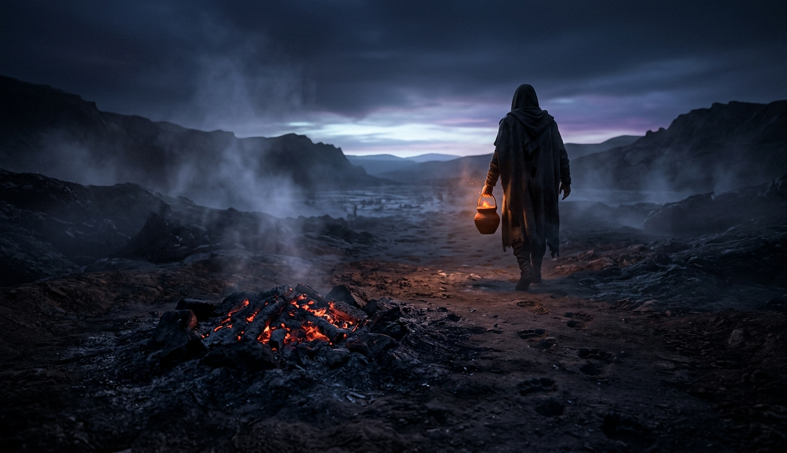
Костёр догорел до углей, и одна рука уносит уголь в глиняном горшке к горизонту. Так носили огонь, пока не научились его добывать, и так до сих пор носят истории: от того, кто рассказал, к тому, кто повторит.